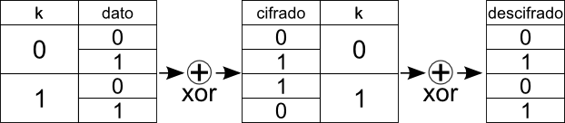

Este texto trata sobre el cifrado RC4: qué es, por qué se usa, en qué consiste, cuáles son los ataques más significativos conocidos y cómo evitarlos.
RC4 es un esquema de cifrado de flujo (no basado en bloques) simétrico.
Fue diseñado por Ron Rivest (la R de RSA) en 1987. Originalmente era secreto, pero se filtró en 1994 a través de una lista de correo.
Es un esquema de cifrado extremadamente simple y puede implementarse en software de forma muy eficiente. Esto lo ha convertido en uno de los esquemas de cifrado más utilizados del mundo.
Sin embargo, RC4 hace tiempo que no es considerado un algoritmo seguro. RC4 es conocido por ser el mismo esquema de cifrado usado por WEP (Wired Equivalent Privacy), sistema criptográfico totalmente roto hoy en día.
Menos conocido es que RC4 es usado aún en aproximadamente la mitad de transmisiones TLS que ocurren en el mundo actualmente, desde para consultar tu correo hasta para establecer transferencias bancarias.
Hoy en día el interés por el RC4 parte de querer conocer hasta qué punto está roto y cómo de vulnerables son los sistemas que lo utilizan.
Es rápido incluso en hardware viejo. Cuando alguien decide soportar HTTPS, la carga que el cifrado supondrá es a menudo un factor importante para la elección de un esquema de cifrado u otro. El cifrado RC4 es lo suficientemente rápido como para responder a estas preocupaciones.
Afortunadamente, los nuevos procesadores incorporan un juego específico de instrucciones para el cifrado y descifrado con AES, algoritmo notablemente más seguro que RC4, y que además, gracias a la implementación en hardware de este algoritmo, es capaz de procesar más datos por unidad de tiempo. Esto es muy buena noticia para los sistemas nuevos, pero no cubre a sistemas más antiguos.
Es fácil de implementar. La implementación de RC4 cabe en una servilleta. Dada su simplicidad, se puede integrar fácilmente en el software de dispositivos embebidos sin depender de complejas bibliotecas criptográficas. Es utilizado en muchos sistemas anti-copia DRM (Digital Rights Management) 1.
No está roto del todo. No se conoce un método para romper un texto arbitrario cifrado en RC4, pero cada vez aparecen más ataques, y últimamente se están intensificando. Dice un viejo dicho de la NSA: Los ataques siempre van a mejor, nunca van a peor.
Ataques BEAST de finales de 2011, que afectan a los cifrados de bloque 2. Para obstaculizarlos, muchos administradores de sistemas configuraron TLS para utilizar un cifrado de flujo, RC4.
Un cifrado de flujo, tal como es el RC4, utiliza muestras de datos más pequeñas que un cifrado de bloque. Habitualmente el tamaño de estas muestras coincide con el tamaño mínimo de una unidad de datos que se va a transmitir.
En el RC4 se utiliza un tamaño de 1 byte (unidad mínima de información que se puede transmitir por un protocolo de red de alto nivel o guardar en un fichero), pero estos cifrados pueden utilizar cualquier tamaño, incluido 1 bit.
En un cifrado de flujo, partiendo de una clave secreta compartida por emisor y receptor, ambos generan un flujo de cifrado pseudoaleatorio (keystream). Este flujo de cifrado se mezcla con los datos que se van a transmitir mediante una operación de combinación, habitualmente XOR.
Si la operación que alimenta el flujo es segura (no es fácil para un atacante determinar el estado del flujo de cifrado en un momento dado ni puede conocer qué estado alcanzará en un futuro), el resultado de la operación de combinación también será seguro.
La principal ventaja de los cifrados de flujo frente a los cifrados de bloque es que no necesitan esperar a que se llene un buffer de un número determinado de caracteres para poder cifrar y transmitir, sino que la unidad mínima de transmisión coincide con la unidad mínima que se puede cifrar.
De todas maneras, este problema de los cifrados de bloque puede evitarse utilizando relleno y técnicas de combinación de bloques (ver CBC, Cipher Block Chaining 3), por lo que no es esta la razón que potenció la popularidad de RC4 en TLS.
El algoritmo de cifrado RC4 se descompone en tres partes:
Para generar el flujo de cifrado, RC4 utiliza una permutación de todos los bytes posibles — es decir, un vector S de 256 elementos con todos los números del 0 al 255.
Este vector se utilizará como entrada en la siguiente etapa del algoritmo para generar el flujo de cifrado.
Emisor y receptor comparten una clave secreta. El algoritmo RC4 admite claves de hasta 256 bytes de longitud, aunque la máxima seguridad se consigue con tamaños significativamente menores. Típicamente se utilizan claves de entre 5 y 16 bytes (40 - 128 bits).
El RC4 contempla un protocolo para desordenar los 256 elementos del vector a partir de la clave secreta compartida por emisor y receptor. En este protocolo, se carga el vector S con valores ordenados del 0 al 255 y se itera por cada elemento, intercambiando cada uno por otro de los elementos del vector determinado por la combinación de uno de los números (bytes) de la clave y el valor actual del elemento.
En el cálculo de la posición de intercambio para cada iteración se tiene en cuenta el resultado de la iteración anterior, haciendo el algoritmo más difícil de atacar.
El resultado es un vector permutación S de aspecto aleatorio, pero replicable fácilmente por cualquiera que tenga la clave secreta (receptor legítimo).
El siguiente pseudocódigo muestra de forma detallada este proceso.
for i from 0 to 255
S[i] := i
endfor
j := 0
for i from 0 to 255
j := (j + S[i] + key[i mod keylength]) mod 256
swap values of S[i] and S[j]
endfor
Partiendo del vector de estado generado en la etapa anterior y dos variables i y j se genera el flujo de cifrado.
En cada iteración del algoritmo se emite un byte del flujo de cifrado y se intercambian dos elementos del vector. En todo momento el estado del sistema está determinado por el valor de las variables i y j y el vector estado.
Si un atacante llegara a conocer todos estos valores en un momento determinado de la transmisión, podría descifrar todos los mensajes que se cifraran desde ese momento en adelante.
El siguiente pseudocódigo detalla el proceso de generación del flujo de cifrado.
i := 0
j := 0
while GeneratingOutput:
i := (i + 1) mod 256
j := (j + S[i]) mod 256
swap values of S[i] and S[j]
K := S[(S[i] + S[j]) mod 256]
output K
endwhile
A cada K resultado del algoritmo anterior se le hace la operación XOR con un byte del texto plano para obtener el texto cifrado y se envía por el canal.
¡La parte más divertida del RC4!
Debido a lo sencilla que es la operación de combinación, el RC4 se presta muy dado a manipulaciones. Básicamente, si un atacante invierte un bit en el texto cifrado, el receptor recogerá el bit descifrado invertido también.
La siguiente imagen muestra cómo un bit se cifra haciendo XOR con el valor de la función de flujo de cifrado en ese bit.

La siguiente imagen muestra cómo si alteramos los bits cifrados, el receptor recibe los bits invertidos.
Si bien es cierto que un atacante intermedio puede alterar los bits como le plazca, esto no le ayuda a obtener el texto plano desde el cifrado. ¿Por qué debe preocuparnos entonces este efecto?
Mientras el atacante no conozca el texto plano, cualquier alteración del mensaje que haga producirá basura. Esto sería aceptable si no fuera porque en las aplicaciones de la vida real, tales como HTTPS, el atacante conoce gran parte del texto plano.
Una página web segura no es secreta completamente. Información como contraseñas, mensajes de los usuarios, números de cuenta, etc. es secreta; sin embargo, toda la estructura de la página que no es secreta se envía también por el mismo canal cifrado.
Estos datos constituyen largos segmentos de información que el atacante puede obtener muy fácilmente (ej. cargando la página a atacar en su navegador) y que luego puede esperar encontrar en el texto plano de una comunicación cifrada.
Si el atacante conoce segmentos del texto plano y además puede alterar todos los bits en esos segmentos sin ser detectado, el atacante podrá sustituir esos segmentos por lo que quiera. Sería trivial que cambiara por ejemplo el campo destino de un formulario para que los datos se enviaran a su propio servidor en vez de al servidor legítimo.
Conclusión 1: Los datos cifrados mediante RC4 deben firmarse, por ejemplo con un función hash, de manera que un atacante no pueda modificar el mensaje a su antojo.
Pero queda un aspecto importante. La solución más fácil parece ser incluir el hash (SHA-1, por ejemplo) del mensaje al final, y cifrarlo todo. Sin embargo, esto no es suficiente.
Si un atacante conociera todo el texto plano del mensaje, todavía podría alterarlo a su antojo, sólo teniendo cuidado de sustituir la firma vieja por una nueva.
¿Pero que problema hay? Si el atacante tiene el texto plano entero es que no necesita atacar nada, ¿no?
Hay un caso de uso muy frecuente en el que es extremadamente indeseable que un atacante altere un mensaje que conoce íntegramente: las páginas de login.
Una página de login es — por lo general — igual para todos los usuarios del sitio. El texto plano que se envía puede ser el mismo; sin embargo, sería muy indeseable que alguien pudiera modificar esta página por las misma razón que en el caso anterior.
Conclusión 2: Para muchas aplicaciones, los datos cifrados mediante RC4 deben firmarse de tal forma que no puedan ser manipulados ni siquiera por un atacante que ya conozca el mensaje completo.
Una forma de modificar el esquema anterior para lograr esto es mediante un nonce: En el texto plano se incorpora un número pseudoaleatorio (nonce) que se hará pasar por la función hash.
Puesto que el nonce — suponiendo que es un número pseudoaleatorio de calidad criptográfica — no es conocido por el atacante, éste no podrá incluirlo en la función hash y por tanto será incapaz de manipular el mensaje sin que salten las alarmas.
Nota: Esto no es algo específico de RC4, sino que se aplica a todos los cifrados de flujo.
Las claves secretas usadas en RC4 no deben ser reutilizadas nunca. Reutilizarlas liberaría información sobre el texto plano 4.
Esto es así por la forma en la que funcionan los cifrados de flujo. Recordemos la tercera etapa del algoritmo RC4:
$$C = K \oplus M$$
$C$ es el mensaje cifrado, $K$ es el flujo de cifrado y $M$ es el texto plano.
Si reutilizamos la clave, $K$ será la misma secuencia de bits.
Supongamos que tenemos dos mensajes cifrados con la misma $K$, $C1$ y $C2$.
$$C1 = K \oplus M1$$ $$C2 = K \oplus M2$$
Si hacemos XOR de las dos expresiones...
$$C1 \oplus C2 = (K \oplus M1) \oplus (K \oplus M2)$$
Puesto que XOR es una operación asociativa, podemos distribuir la expresión anterior de esta forma:
$$ C1 \oplus C2 = M1 \oplus M2 \oplus K \oplus K $$
El resultado de hacer XOR de un número consigo mismo es todo ceros. El resultado de hacer XOR de un número con todo ceros es el mismo número. Aplicando esto podemos anular $K \oplus K$.
$$ C1 \oplus C2 = M1 \oplus M2 $$
Tenemos ahora que el XOR de los dos mensajes cifrados nos da el XOR de los mensajes en texto plano. En consecuencia, no sabemos el contenido de los mensajes, pero sí sabemos qué bits tienen en común y cuáles no, y eso es bastante información.
A partir de aquí un atacante podría aplicar métodos estadísticos para descifrar un mensaje. Si además uno de los mensajes tenía segmentos de texto no secreto conocido por el atacante (cosa frecuente, como comentábamos en el punto anterior), el atacante puede determinar automáticamente el texto plano en el otro mensaje durante todo ese segmento.
La solución a este problema pasa por no repetir claves completas. Emisor y receptor pueden pactar una parte común de la clave para todas las transmisiones, y en cada transmisión incluir un vector de inicialización (IV) no cifrado con un número pseudoaleatorio que se añadirá para generar la clave secreta completa.
Para más seguridad, se recomienda utilizar una función hash: La parte común de la clave se concatena con el IV, se pasa todo por la función hash y se usa el resultado como clave secreta final para esa transmisión.
En 2001, Fluhrer, Mantin y Shamir demostraron que los primeros bytes del flujo de cifrado de RC4 son menos aleatorios de lo que deberían, revelando información acerca de la clave 5.
Si la parte común de la clave se concatena con el IV sin pasar por una función hash, el análisis de muchos mensajes podría revelar la clave común.
Esto es lo que posibilitó la ruptura del WEP por primera vez. Para que el ataque funcionara era necesario conocer el primer byte del texto plano, lo cual no supuso ningún problema puesto que en el caso de WEP es una cabecera fija del protocolo.
Para defenderse de este ataque, algunos sistemas posteriores implementaron RC4-drop[n], siendo n un número de bytes que se descartarían al principio del flujo de cifrado. Este n suele oscilar entre 768 y 3072 bytes.
El ataque de Fluhrer, Mantin y Shamir funcionaba, pero todavía era poco práctico.
En 2005 Andreas Klein demostró más correlaciones existentes entre el flujo de cifrado y la clave del RC4 6.
Este trabajo fue materializado en aircrack-ptw (más tarde incorporado en aircrack-ng), que permitía romper un cifrado WEP de 104-bits (máximo tamaño de clave permitido por el protocolo: 104 bits de clave común + 24 bits de IV = RC4 de 128 bit) con apenas 40.000 paquetes con una probabilidad del 50% o con 85.000 paquetes con una probabilidad del 95%. Este tráfico es equivalente a minutos o pocas horas de uso de la red, dependiendo de la víctima.
Esto, unido a los posteriores ataques de inyección de paquetes 7 y la difusión de estas herramientas compiladas en una forma fácil de usar acabó por destruir toda la anteriormente supuesta seguridad de WEP.
Es el último ataque al RC4 conocido (2013), y que sí afecta a TLS. 8
Este ataque propone que el flujo criptográfico de RC4 no es todo lo aleatorio que debería, sino que algunos valores son ligeramente más frecuentes que otros.
Explotando esto, si un mismo texto plano es cifrado una cantidad significativa de veces con distintas claves, un atacante podría determinar dicho texto plano con una probabilidad suficientemente alta.
En el escenario propuesto, un atacante alteraría una página web no cifrada para insertar un código tal que el navegador del usuario envíe un número significativo de peticiones TLS similares al servidor a atacar. El atacante recogería los datos de estas conexiones y los analizaría utilizando unas tablas de desviación para descifrar porciones del texto plano como aquellas con la cookie de sesión del usuario.
Para explotar estas desviaciones se precisan alrededor de 2^30 comunicaciones. Son muchas comunicaciones; sin emabargo, dada la proliferación de ataques, no es extraño pensar que este número se reduzca significativamente en un futuro no muy lejano.
Este nuevo ataque está a un paso de lo práctico, lo que ha causado una incipiente preocupación por abandonar RC4 en TLS.
RC4 es un algoritmo interesante, pero es momento de empezar a abandonarlo, antes de que sea demasiado tarde.
Si bien no es posible romper sistemáticamente un sistema criptográfico arbitrario basado en RC4, hay muchos puntos donde se puede fallar y probablemente no sean conocidos todos.
Ninguno de los autores de WEP llegó a pensar que el flujo criptográfico del RC4 podría tener correlaciones reversibles con la clave. El descubrimiento de tal debilidad desató toda una serie de ataques sucesivos e investigaciones hasta que los ataques se han vuelto tan prácticos que son la razón por la que mucha gente tiene Internet en casa.
Nada nos asegura que en TLS no vaya a ocurrir lo mismo en un futuro cercano, por lo que es mejor curarse en salud e implementar desde este momento algoritmos en los que no se conozcan tantos fallos, especialmente teniendo en cuenta que el despliegue de actualizaciones de seguridad en los sistemas informáticos a menudo va con años de retraso.
http://www.educatedguesswork.org/2011/09/security_impact_of_the_rizzodu.html ↩
http://en.wikipedia.org/wiki/Cipher_block_chaining#Cipher-block_chaining_.28CBC.29 ↩
http://www.eletrica.ufpr.br/mehl/te155/WEP-Packet_Injection.pdf ↩
http://nakedsecurity.sophos.com/2013/03/16/has-https-finally-been-cracked/ ↩